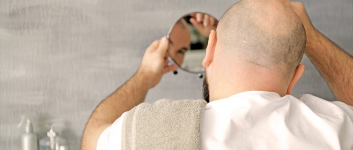

افضل التقنيات لزراعة الشعر للرجال في تركيا
زراعة الشعر للرجال في تركيا تحسّن من مظهرك العامّ، حيث يمكن أن تستفيد من هذه العمليّة إذا كنت ممّن يعانون فقداناً للشّعر أو نقصاً في كثافته
دعنا نتصل بك

زراعة الأسنان في تركيا
تتمّ زراعة الأسنان في تركيا من خلال عملية جراحية بسيطة داخل عظام الفك، حيث تشكّل جذراً قويّاً للسنّ ...
عملية الليزك لـ تصحيح النظر في تركيا
أصبحت عملية تصحيح تحدّب القرنية بالليزر (الليزك) العملية الأكثر شيوعاً بين عمليات الليزر لتصحيح مشاك...
جراحة الأورام في تركيا
بالرغم من تطوّر العلاجات الكيميائية والمناعية التي تتعامل مع الأورام الخبيثة؛ تبقى جراحة الأورام جزء...
تقنية زراعة شعر الذقن والشارب في تركيا
زراعة اللحية والشارب في تركيا حل مثالي لكلّ من يعاني من ضعف أو عدم نموّ شعر اللحية أو الشارب، وذلك و...
من المعروف بأنّ ظاهرة الصلع شائعة للغاية، حيث تصل نسبة الصلع لدى الرجال إلى حوالي 60%، بينما تصل نسبة الصلع لدى النساء إلى 10%.
جدول المحتويات
وربّما تشعر بالقلق إن كنت واحداً من هؤلاء الذين يعانون من الصلع، ما يدفع كثيرين لاستخدام الطُّرق الجراحيّة لعلاج هذه المشكلة عبر زراعة الشعر، وهو الإجراء الأسهل والأكثر شيوعاً.
وربّما تطالعك في السوق بعض المنتجات التي يتمّ تسويقها على أنّها مستحضرات لمنع تساقط الشعر، مثل: منتجات الشامبو، والزيوت، والأمشاط الليزريّة، وغيرها، إلا أنّ هذه الوسائل كلها لم تُثبت نجاعتها طبيّاً بشكل عامّ، وبذلك أضحت زراعة الشعر، العلاج المثالي لمن يشكو من الصلع.

ما سبب الصلع أو فقدان الشعر؟
إنَّ لزيادة هرمونات الذكورة لدى الرجال، تأثير بالغ على بصيلات الشعر التي تحمل هذه الجينات ذاتها. أمّا بالنسبة للنساء فينطبق عليهنّ الأمر نفسه من حيث زيادة الهرمون، ولكن دم الأنثى لا يحوي هرمونات ذكورة بتركيز مرتفع كما عند الرجال.
هل زراعة الشعر مناسبة لي ؟
لا شكّ بأنّ زراعة الشعر تحسّن من مظهرك العام وتعيد إطلالتك الشابة، حيث يمكن أن تستفيد من هذه العمليّة إذا كنت من بين هذه الفئات:
- الرجال الذين يعانون من الصلع الذكوري.
- مَن فقد بعض شعره نتيجة إصابة فروة الرأس.
- النساء اللواتي يعانِين من فقدان الشعر الجزئيّ أو قِلَّة كثافة الشعر.
نتائج زراعة الشعر بعد 6 شهور
التقنية
أقلام تشوي
عدد البصيلات
3500
النتيجة
بعد 9 أشهر
اسم التقنية
DHI
عدد البصيلات
2100
النتيجة
بعد 6 اشهر
التقنية
DHI
عدد البصيلات
2700
النتيجة
بعد 7 شهور
التقنية
DHI
عدد البصيلات
3100
النتيجة
بعد 10 شهور
التقنية
DHI
عدد البصيلات
2500
النتيجة
بعد 9 أشهر
اسباب فشل عملية زراعة الشعر
- عندما لايملك المريض منطقة مانحة كافية لأخد الشعر منها.
- الأشخاص الذين يمتلكون جلداً يعاني من الجُدْرة، أو ما يسمى باللحم الوحشي keloid تظهر آثاره عقب العمليات والإصابات.
- مَن فقد شعره نتيجة العلاج الكيماوي أو الأدوية.
تقنيات زراعة الشعر في تركيا
عند اعتمادك لتقنية زراعة الوحدة البصيلية (FUT) يستخدم الجرّاح مشرطاً لقطع شريحة من فروة مؤخّرة الرأس، ويكون هذا القطع الجراحيّ بطول عدّة بوصات، ثمّ يقوم الجرّاح بإغلاق المنطقة باستخدام غُرَزٍ جراحية.
يقوم الجرّاح بفصل تلك القطعة المأخوذة من فروة الرأس وتجزيئها إلى قِطَع صغيرة تحت عدسة مكبِّرة، باستخدام مشرط جراحيّ حادٍّ، ليُعاد زرعها واحدة تلو أخرى في المنطقة المستفيدة.
أمّا في التقنية الأحدث، والتي تُسمى اقتطاف الوحدة البصيلية (FUE) يقتطفُ الجرّاحُ البصيلات مباشرة من مؤخرة رأسك، ويقوم بعمل حُفَر صغيرة باستخدام مشرطٍ أو إبرة صغيرة مخصَّصة لذلك، بهدف وضع الشعر المقطوف في المنطقة المستفيدة، ويزرع الجراح خلال العملية بضعة آلافٍ من البصيلات.


تقنية اقلام تشوي DHI
في تقنية DHI يقوم جهاز القطف الدقيق - والذي لا يتجاوز قطره 1 ملم - بحصد بصيلات الشعر، ولا يتمّ عمل شقوق جراحيّة أو فتحات في المنطقة المستفيدة، وبالتالي لا تتكوَّن ندبات على إثر ذلك، وإنما يتمّ استخدام أداة تسمى أقلام تشوي لزراعة البصيلات التي تمّ قطفُها.
وتمنح هذه التقنية تغطية كبيرة وكثافة عالية، كما أنّها تعطي الطبيب إمكانية أكبر للتحكم في اتجاه الشعر بشكل كامل، وتختلف فيها طريقة الزراعة بحيث لا يحتاج الطبيب لفتح القنوات باستخدام الجروح الصغير كما في التقنيات القديمة، وإنما يكتفي بإسقاط البصيلات المراد زراعتها مباشرة داخل فروة الرأس، وهو ما يقلِّل من الآثار الجانبية للزراعة ويمنع حدوث أي ندوب جراحية.
تُعَدُّ هذه التقنية الأكثر تقدّماً، وذات استخدامات متعدِّدة، لما لها من ميزات، أهمُّها: عدم الحاجة لحلاقة الرأس كاملاً، ما يجعلها تقنية مفضلةً لدى كثير من الأشخاص، لاسيّما النساء، حيث يتم زرع البصيلات بعدد أقصاه 3000 بصيلة.
أمّا في حال حاجة المريض لعدد أكبر من البصيلات فيتمّ اختيار تقنية Mega DHI، حيث تتمّ الزراعة على يوميين متتاليين، ليتمّ زراعة العدد المطلوب من البصيلات، ويصل العدد الأقصى في هذه التقنية إلى 5000 بصيلة حالياً.
زراعة الشعر بتقنية سفير SAPPHIRE FUE
إذا كنت من المهتمّين بأحدث تقنيات زراعة الشعر فإنّ تقنية FUE تعتبر بالفعل من أهمّ التقنيات التي وصل إليها العلم في مجال طبّ التجميل وجراحته، والتي توفّر نتيجة طبيعيّة 100% مقارنة بالتقنيّات السابقة.
حيث تطوّرت هذه التقنيّة خطوة أخرى إلى الأمام باستخدام الأقلام الخاصّة المصنوعة من حجر السفير، وهو أحد الأحجار الكريمة.
وفيها يتم استخدام قلم يسمى: قلم السفير، وهو قلم مطوَّر يتمّ استخدامه في فتح القنوات خلال عملية زراعة الشعر، حيث يمتلك رأساً رفيعاً ومدبَّباً وحادّاً، ويكون على شكل حرف V، ويساعد الحدُّ المدبَّب لهذا القلم في فتح القنوات بمستوى عالٍ من الدِّقة، وبمراعاة حجم متناهي الصِّغر، ما يقلِّل من خطر إصابة البصيلات المجاورة واحتمال حدوث ندبات.
مراحل عملية زراعة الشعر في تركيا
مراحل عملية زراعة الشعر في تركيا
يُحلَقُ شعر المريض بالكامل، وفي بعض الأحيان يمكن الزراعة حتى دون حلاقة، ثم تُغسل فروة الرأس بمحلولٍ معقِّم، وتُحقن الفروة بالمخدِّر الموضعيّ لتقليل الألم
نستخدم في هذه المرحلة جهاز الميكروموتور لاقتطاف البصيلات من المنطقة المانحة، من دون الإضرار بالبصيلة أو البصيلات المجاورة، ما يزيد كمية البصيلات المقتطفة السليمة، والتي يمكن زراعتها بنجاح
بعد اقتطاف بصيلات الشعر يتمّ الاحتفاظ بها في محلول خاصّ يُستخدم لحفظ أعضاء الجسم البشرية خلال عمليّات نقلها، ويبقي هذا المحلول البصيلات حيَّة وسليمة وقابلة للزراعة والنموّ بشكل طبيعي
يتمّ فتح القنوات في تقنية DHI باستخدام أقلام تشوي، حيث يتمّ فتح القنوات وزرع الشعر مباشرة بخطوة واحدة، بينما في تقنية السفير SAPPHIRE FUE يتمّ استخدام أداةٍ ذات رأس حادٍّ من حجر السفير لفتح القنوات، ويمتاز هذا القلم بسلاسة فتح القناة دون إحداث ضرر أو ندوب، ليتم زرع البصيلات فيها.
يتمّ إدراج البصيلات المقتطفة في القنوات التي سبق فتحها، وهي عمليَّة فنّيَّة تتطلب مهارة عالية، لمراعاة الكثافة المطلوبة، والشكل الجماليّ، والنموّ الطبيعيّ للشعر
- التجهيز لعملية زراعة الشعر
يُحلَقُ شعر المريض بالكامل، وفي بعض الأحيان يمكن الزراعة دون حلاقة، ثم تُغسل فروة الرأس بمحلولٍ معقِّم، وتُحقن الفروة بالمخدِّر الموضعيّ لتقليل الألم. - اقتطاف البصيلات من المنطقة المانحة
يُستخدَم في هذه المرحلة جهاز الميكروموتور لاقتطاف البصيلات من المنطقة المانحة، من دون الإضرار بالبصيلة أو البصيلات المجاورة، ما يزيد كمية البصيلات المقتطفة السليمة، والتي يمكن زراعتها بنجاح. - الاحتفاظ بالبصيلات
بعد اقتطاف بصيلات الشعر يتمّ الاحتفاظ بها في محلول خاصّ يُستخدم لحفظ أعضاء الجسم البشرية خلال عمليّات نقلها، ويُبْقِي هذا المحلولُ البصيلاتَ حيَّة وسليمة وقابلة للزراعة والنموّ بشكل طبيعي. - مرحلة فتح القنوات
يتمّ فتح القنوات في تقنية DHI باستخدام أقلام تشوي، حيث يتمّ فتح القنوات وزرع الشعر مباشرة بخطوة واحدة، بينما في تقنية السفير SAPPHIRE FUE يتمّ استخدام أداةٍ ذات رأس حادٍّ من حجر السفير لفتح القنوات، ويمتاز هذا القلم بسلاسة فتح القناة دون إحداث ضرر أو ندوب، ليتم زرع البصيلات فيها. - مرحلة زراعة الشعر
يتمّ إدراج البصيلات المقتطفة في القنوات التي سبق فتحها، وهي عمليَّة فنّيَّة تتطلب مهارة عالية، لمراعاة الكثافة المطلوبة، والشكل الجماليّ، والنموّ الطبيعيّ للشعر, في تقنية DHI يتم فتح القنوات والزراعة بخطوة واحدة، أمّا في تقنية "السفير" فيتمّ فتح القنوات باستخدام قلم السفير، ومن ثَمّ زراعة الشعر المقطوف باستخدام أداة خاصّة.
مراحل زراعة الشعر في تركيا بالفيديو
كم مدة عملية زراعة الشعر؟
تستغرق عملية زراعة الشعر عادةً 4 ساعاتأو أكثر، وقد تصل إلى 8 ساعات كاملة، وربّما تحتاج بعض الحالات لأكثر من جلسة ليتمّ تغطية المنطقة المطلوب تغطيتها بالشعر، وقد تتقارب الجلسات أو تتباعد، بحسب قرار الطبيب.
تعليمات بعد زراعة الشعر؟
قد يُستخدم ضماد لتغطية مكان العملية، وقد يشعر المريض بشيء من الألم في فروة رأسه، فيحتاج لاستخدام بعض الأدوية، مثل:
- مسكنات الألم.
- مضادّات حيويّة؛ لمنع حدوث التهابات في المنطقة المستفيدة أو المانحة.
- مضادات للالتهاب لتقليل التورم في فروة الرأس.
ويستطيع معظم الأشخاص استئناف أعمالهم بعد بضعة أيام من الجراحة.
من الطبيعي بعد العملية مباشرة أن يسقط بعض الشعر خلال أسبوعين أو 3 من العملية، وهو ما يسمح للشعر الجديد بالنمو، ويحدث هذا النمو خلال فترة 8 إلى 12 شهراً بعد العملية.
ما بعد زراعة الشعر؟
لا تقلق من بعض المضاعفات التي يمكن أن تحدث بعد عملية زراعة الشعر ومنها:
- نزيف في مكان العملية.
- التهاب.
- تورُّم خفيف في فروة الرأس.
- زُرْقَة حول العينين.
- ظهور القشرة مكان العملية.
- حكَّة.
- التهاب في بصيلات الشعر.
- سقوط مؤقَّت في الشعرات المزروعة.
متى تثبت البصيلات بعد زراعة الشعر
عادةً ما يلاحِظ الأشخاص الذين قاموا بإجراء عملية زراعة الشعر نموّاً واضحاً للشعر في المناطق المزروعة خلال فترة قصيرة بعد العملية، حتى يصل الشعر إلى كثافةٍ كاملة خلال فترة تتراوح بين 10 إلى 12 شهراً.
قد تختلف كثافة الشعر لاحقاً، ويعتمد ذلك على عوامل عدة، منها:
- كثافة البصيلات المزروعة في المنطقة المستفيدة.
- قُطر الشعر وجودته.
- مدى تموّج الشعر.
ولا بد للمريض من أخذ بعض العلاجات أو إجراء جلسة ليزر بعد عملية الزرع، لمنع سقوط الشعر في المناطق البعيدة عن المنطقة المزروعة.
نصائح بعد زراعة الشعر في تركيا
من المهم بالنسبة للمريض مناقشة توقّعات نتائج العملية التي سيُقدم عليها، والاستفسار عن كل الأسئلة التي تجول بخاطره، وبتواصلكم معنا ستجدون إجابة وافية حول كلّ ما يتعلق بزراعة الشعر وتقنيّاته المتطوّرة.
زراعة الشعر للرجال في تركيا
تتم عمليات زراعة الشعر في تركيا على أسس طبية وعلمية دقيقة وبحسب أعلى المعايير العالمية، ينقل فيها الجراح بصيلات الشعر من منطقة الشعر الكثيف، مثل جوانب ومؤخرة الرأس (المنطقة المانحة)، إلى منطقة أخرى تعاني من تساقط الشعر (المنطقة المستقبلة).
تتميز زراعة الشعر في تركيا بالنتائج الممتازة والأسعار المناسبة، وهو ما أكسبها سمعة طيبة بين الراغبين في زراعة الشعر حيث يمكنكم التأكد ممن جرب زراعة الشعر في تركيا للوصول إلى القناعة التامة.
تعتبر عملية زراعة الشعر غير مؤلمة بسبب التخدير الموضعي الذي يستمر لمدة 12 ساعة تقريبًا، ويتم تزويد المريض أيضًا بمسكنات مناسبة لفترة ما بعد الجراحة.
عادةً ما تكون عمليات زرع الشعر أكثر نجاحًا من إجراءات استعادة الشعر الأخرى. ولكن هناك بعض العوامل التي يجب مراعاتها، سينمو الشعر المزروع بنسبة 10 إلى 80 في المائة بالكامل مرة أخرى في فترة تتراوح من ثلاثة إلى أربعة أشهر، مثل الشعر العادي.
تعتمد فكرة الاقتطاف على استخراج الوحدات البصيلية من المناطق المانحة بواسطة أدوات دقيقة ليتم زرعها لاحقاً في المناطق المتضررة، تحتوي كل بصيلة على 2-3 شعيرات، مع الأخذ في الاعتبار اتجاه الشعر، خلال العملية يتم إزالة بصيلات الشعر تحت التخدير الموضعي، من أهم ما يميز هذه التقنية أنها لا تترك ندوباً أو شقوقاً بالإضافة إلى كونها غير مؤلمة.
تعتبر عملية زرع الشعر من العمليات باهظة الثمن في أوروبا وأمريكا والعالم، ولكنها تتميز بأسعار معقولة في تركيا، حيث تتراوح زراعة الشعر بين 800 إلى 1000 يورو، كما يمكنكم الاطلاع على مقالنا لتفاصيل أكثر استفاضة عن أسعار زراعة الشعر في تركيا.
نظراً لما تحققه تركيا في السنوات الاخيرة في المجال الطبي بشكل عام والسياحة العلاجية بشكل خاص، نستطيع القول بأن تركيا من أنجح الدول في زراعة الشعر.
هناك الكثير من الأفعال الواجب تجنبها بعد عملية زراعة الشعر مثلا لا يجب استخدام أدوية تمييع الدم لتجنب زيادة النزيف. كما يجب الاستحمام بطريقة معينة منعاً لإلحاق الاذى بالشعر المزروع، نقوم في علاجك الطبية بشرح مفصل لكل مريض حول ما يجب فعله وما يجب تجنبه للحصول على أفضل النتائج.
تنتقل بصيلات الشعر عبر مراحل باستمرار ولادة وراحة كجزء من عملية نمو الشعر الطبيعية. بينما تموت البصيلات مؤقتًا، ومع ذلك، يمكن أن تتسبب بعض الحالات - مثل الصلع وصدمة الجلد - في موت بصيلات الشعر تمامًا.
تتشابه زراعة الشعر في تركيا وإيران نوعاً ما، ولكنها تتميز في تركيا من حيث التقنيات المستخدمة وسهولة التنقل وتعدد أساليب الدفع.
نتائج زراعة الشعر في اسطنبول
هل لديك إستفسار :تواصل معنا - الإستشارة مجانية
علاجك الطبية .. لتكن الصحة تاجك.